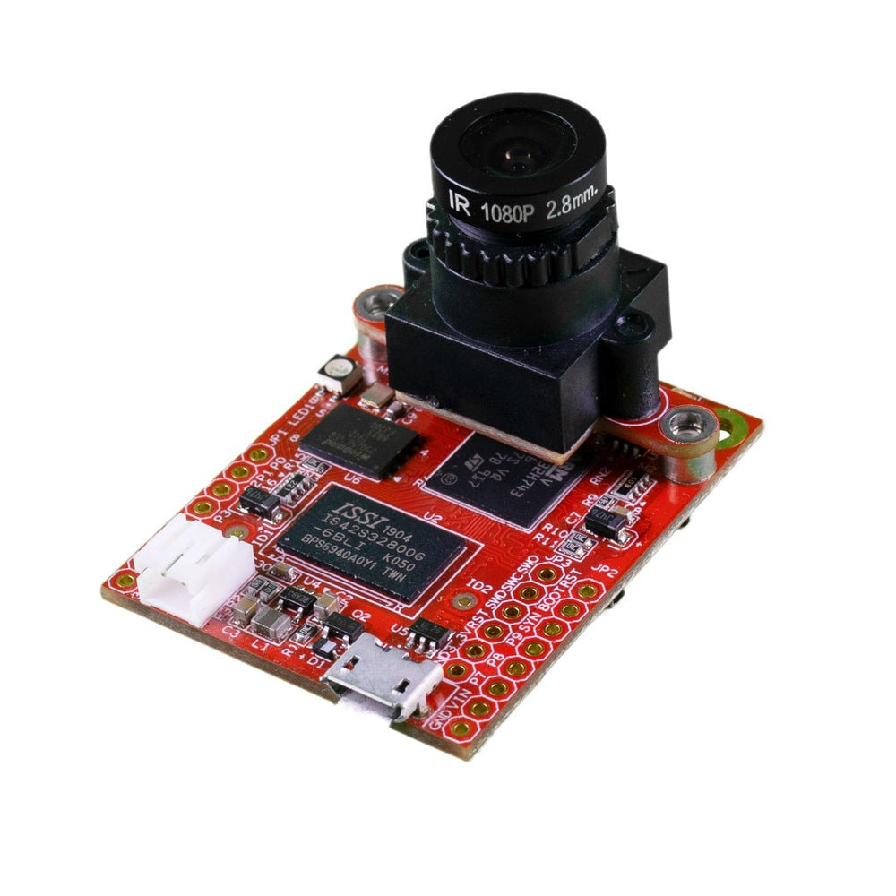
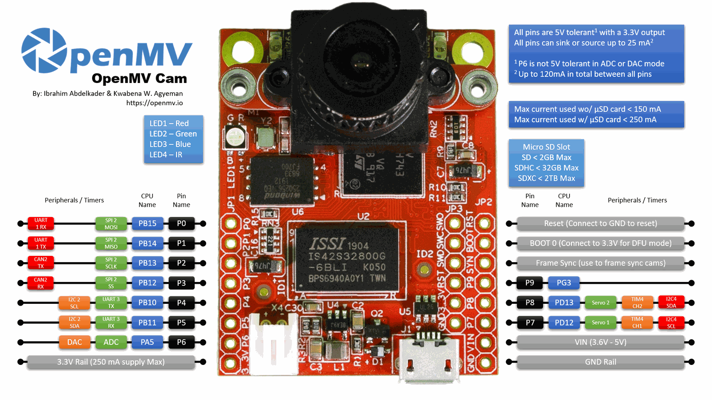

OpenMV Cam H7 Plus¶
OpenMV Cam H7 Plus kombinira STMicroelectronics STM32H743 (Cortex‑M7 @ 480 MHz) s 32 MB vanjske SDRAM memorije, 32 MB QSPI flash memorije, hardverskim JPEG kodekom i OV5640 5MP kamera modulom na odvojivom nosaču. Dodatna memorija dobro odgovara snimanju visoke razlučivosti i velikim međuspremnicima slike.
{kind=link}

Za potpun podatkovni list, fotografije i dimenzije pogledajte stranicu proizvoda OpenMV Cam H7 Plus.
Istaknute značajke¶
STMicroelectronics STM32H743 Cortex‑M7 na 480 MHz (1027 DMIPS).
Hardverski JPEG koder/dekoder.
32 MB vanjske SDRAM memorije (32‑bitna @ 100 MHz, 400 MB/s) plus 1 MB interne SRAM memorije.
2 MB interne flash memorije + 32 MB vanjske QSPI flash memorije (~100 MB/s čitanje).
OV5640 5MP senzor s kotrljajućim zatvaračem.
Full‑speed USB (12 Mb/s) — domaćinu se prikazuje kao VCP + USB masovna pohrana.
microSD utor — SD do 2 GB, SDHC do 32 GB, SDXC do 2 TB.
LiPo priključak za bateriju (bez ugrađenog punjača — priključite napunjenu ćeliju ili napajajte preko VIN/USB).
10 I/O pinova, otpornih na 5 V s 3,3 V izlazom, 25 mA po pinu (ukupno 120 mA na cijelom konektoru), sposobnih za prekide. P6 nije otporan na 5 V kada se koristi u ADC ili DAC načinu rada.
Korisnička RGB LED i dvije IR LED diode velike snage na 850 nm za aktivno osvjetljenje pri strojnom vidu u uvjetima slabog svjetla.
Napomena
H7 Plus nema ugrađeni čip za upravljanje napajanjem: nema punjača baterije, nema ADC-a za napon baterije, nema LED dioda za punjenje / status napajanja te nema hardverskog gumba za napajanje. Priključite prethodno napunjenu LiPo bateriju na bateriju JST ili napajajte ploču preko USB / VIN.
Raspored pinova¶
{kind=link}

Referenca pinova¶
Naziv pina |
Funkcija |
|---|---|
P0 |
UART1 RX / SPI2 MOSI |
P1 |
UART1 TX / SPI2 MISO |
P2 |
SPI2 SCK / FDCAN2 TX |
P3 |
SPI2 NSS (CS) / FDCAN2 RX |
P4 |
I2C2 SCL / UART3 TX / TIM2 CH3 |
P5 |
I2C2 SDA / UART3 RX / TIM2 CH4 |
P6 |
ADC / DAC / TIM2 CH1 |
P7 |
I2C4 SCL / TIM4 CH1 |
P8 |
I2C4 SDA / TIM4 CH2 |
P9 |
digitalni I/O |
RESET |
spojite na GND za resetiranje ploče |
SYN |
pločica za sinkronizaciju sličica — spojena samo na senzor kamere |
BOOT0 |
spojite na 3,3 V pri uključenju za DFU / ROM pokretač (bootloader) |
LED_RED |
crveni kanal RGB LED diode (aktivan na niskoj razini) |
LED_GREEN |
zeleni kanal RGB LED diode (aktivan na niskoj razini) |
LED_BLUE |
plavi kanal RGB LED diode (aktivan na niskoj razini) |
LED_IR |
IR LED diode velike snage (oba kanala se pokreću zajedno) |
Napomena
Pločica SYN na konektoru spojena je izravno na okidačku / ekspozicijsku liniju senzora kamere — na H7 Plus modelu ne vodi do MCU-a. Pokrećite je ili čitajte izvana; ne možete je prebacivati iz MicroPythona.
Pinovi za napajanje¶
3.3V — regulirana naponska linija od 3,3 V. Dostupno do 250 mA za štitnike (manje ako se koristi microSD kartica). Za razliku od novijih kamera, ovaj pin je dvosmjeran — pogledajte upozorenje u nastavku.
VIN — ulaz 3,6 – 5 V. Napaja ploču kroz ugrađeni regulator.
GND — zajednička masa.
Prisutan je i priključak za 3,7 V LiPo bateriju, ali H7 Plus nema punjač baterije — priključite prethodno napunjenu ćeliju ili umjesto toga napajajte preko VIN / USB.
Napomena
Kada su prisutni i USB i VIN/LiPo, prevladava VIN/LiPo ulaz — ugrađena sklopka za napajanje odabire njega umjesto USB-a za napajanje ploče.
Upozorenje
Na H7 Plus modelu priključak za bateriju i VIN su međusobno spojeni. Ne priključujte LiPo bateriju i istovremeno dovodite VIN — dva izvora napajanja međusobno će se boriti i mogu oštetiti bateriju, ploču ili oboje.
Upozorenje
Možete napajati H7 Plus dovođenjem 3,3 V izravno na pin 3.3V ako ne želite prolaziti kroz ugrađeni regulator. U tom slučaju nemojte istovremeno dovoditi i VIN ili USB napajanje — povratno pokretanje regulatora dok je drugi izvor aktivan može trajno oštetiti i uništiti kameru.
Savjet
Koristite procjenitelj trajanja baterije za modeliranje koliko će dugo H7 Plus raditi na bateriji za zadani omjer aktivnog rada / dubokog mirovanja.
Pinovi za oporavak i otklanjanje pogrešaka¶
RESET — spojite na GND za resetiranje ploče. Otpuštanjem omogućujete MCU-u da se normalno pokrene.
BOOT0 — spojite na 3,3 V tijekom napajanja ploče za ulazak u STM32 ROM pokretač (DFU način rada). OpenMV IDE koristi ovaj način rada za ponovno upisivanje ugrađenog pokretača (bootloadera).
Ploča izlaže SWD konektor za otklanjanje pogrešaka (RST / SWCLK / SWDIO / SWO) pokraj GPIO konektora, kompatibilan s ST‑LINK i SEGGER J‑Link adapterima.
Napomena
Pin za praćenje SWO dijeli se s linijom SPI takta na konektoru kamere. SWO se ne može koristiti istovremeno s bilo kojim kamera modulom koji komunicira s MCU-om preko SPI-a — na primjer s FLIR® Lepton® adapterskim modulom — odaberite jedno ili drugo.
Ugrađene periferije¶
LED diode¶
H7 Plus ima jednu korisničku RGB LED diodu i par IR LED dioda velike snage na 850 nm:
Korisnička RGB LED — softverski upravljiva, izložena kao
LED_RED,LED_GREENiLED_BLUEfrom machine import LED LED("LED_RED").on() LED("LED_GREEN").on() LED("LED_BLUE").on()
IR LED diode — obje LED diode pokreću se zajedno preko pina
LED_IR.LED_IRje u hardveru ožičen kao aktivan na visokoj razini, dok ugrađeni program svaku drugu ugrađenu LED diodu tretira kao aktivnu na niskoj razini, pa koristitelow()/high()umjestoon()/off()(što bi obrnulo logiku):from machine import LED ir = LED("LED_IR") ir.low() # turn IR illumination ON ir.high() # turn IR illumination OFF
Senzor kamere¶
OV5640 se pokreće kroz modul csi — senzori kamere
import csi
cam = csi.CSI()
cam.reset()
cam.pixformat(csi.RGB565)
cam.framesize(csi.QVGA)
cam.snapshot(time=2000) # let auto‑exposure settle
while True:
img = cam.snapshot()
OV5640 ima ugrađeni JPEG kompresor. Postavite csi.CSI.pixformat na csi.JPEG i senzor isporučuje komprimirane sličice izravno kameri preko sabirnice kamere, što čini snimanje visoke razlučivosti praktičnim: csi.HD (1280×720), csi.FHD (1920×1080) i puni 5MP csi.WQXGA2 (2592×1944) svi se prenose kao JPEG. Podesite kompresiju pomoću csi.CSI.quality (0-100, više = veće sličice, više detalja):
{kind=link}
cam.pixformat(csi.JPEG)
cam.framesize(csi.WQXGA2)
cam.quality(90)
Senzor se nalazi na odvojivom modulu — zamijenite ga bilo kojim drugim OpenMV kamera modulom (globalni zatvarač, termalni, viša razlučivost itd.) bez mijenjanja ostatka ploče.
Strojno učenje¶
ml — Strojno učenje pokreće kvantizirane TFLite modele na Cortex‑M7 s CMSIS‑NN jezgrama — dovoljno brzo za kompaktne detektore pri nekoliko sličica u sekundi. Modeli na datotečnom sustavu samo za čitanje /rom učitavaju se izravno iz flash memorije bez kopiranja u RAM. Evo 128×128 BlazeFace detektora koji preklapa otkriveno lice i njegovih šest oznaka na svakoj sličici:
import csi
import time
import ml
from ml.postprocessing.mediapipe import BlazeFace
# Initialize the sensor.
csi0 = csi.CSI()
csi0.reset()
csi0.pixformat(csi.RGB565)
csi0.framesize(csi.VGA)
csi0.window((400, 400))
# Load built-in face detection model
model = ml.Model("/rom/blazeface_front_128.tflite", postprocess=BlazeFace(threshold=0.4))
print(model)
clock = time.clock()
while True:
clock.tick()
img = csi0.snapshot()
# faces is a list of ((x, y, w, h), score, keypoints) tuples
for r, score, keypoints in model.predict([img]):
ml.utils.draw_predictions(img, [r], ("face",), ((0, 0, 255),), format=None)
# keypoints is a ndarray of shape (6, 2)
# 0 - right eye (x, y)
# 1 - left eye (x, y)
# 2 - nose (x, y)
# 3 - mouth (x, y)
# 4 - right ear (x, y)
# 5 - left ear (x, y)
ml.utils.draw_keypoints(img, keypoints, color=(255, 0, 0))
print(clock.fps(), "fps")
microSD kartica¶
Kada je kartica umetnuta, automatski se montira na /sdcard i može se koristiti kroz uobičajeni datotečni sustav:
import os
for entry in os.listdir("/sdcard"):
print(entry)
Referenca sabirnica¶
GPIO¶
Koristite machine.Pin za čitanje ili pokretanje bilo kojeg od pinova označenih na pločici. Izlazi su 3,3 V CMOS, otporni na 5 V na ulaznoj strani, i mogu primati/davati do 25 mA po pinu (ukupno 120 mA na cijelom konektoru).
from machine import Pin
out = Pin("P0", Pin.OUT)
out.on()
out.off()
out.value(1)
inp = Pin("P1", Pin.IN, Pin.PULL_UP)
print(inp.value())
Bilo koji ulazni pin također može pokrenuti prekid pri promjenama na rubu:
def handler(pin):
print("triggered:", pin)
Pin("P1", Pin.IN, Pin.PULL_UP).irq(
handler, Pin.IRQ_FALLING | Pin.IRQ_RISING,
)
UART¶
Sabirnica |
TX |
RX |
|---|---|---|
UART1 |
P1 |
P0 |
UART3 |
P4 |
P5 |
from machine import UART
uart = UART(3, baudrate=115200)
uart.write("hello")
uart.read(5)
I²C¶
Sabirnica |
SCL |
SDA |
|---|---|---|
I2C2 |
P4 |
P5 |
I2C4 |
P7 |
P8 |
from machine import I2C
i2c = I2C(2, freq=400_000)
i2c.scan()
i2c.writeto(0x76, b"hi")
Isti hardver također se može koristiti u ciljnom (slave) načinu rada kroz machine.I2CTarget za izlaganje memorijskog područja drugom I²C upravljaču:
from machine import I2CTarget
buf = bytearray(32)
target = I2CTarget(2, addr=0x42, mem=buf)
SPI¶
Sabirnica |
MOSI |
MISO |
SCK |
CS |
|---|---|---|---|---|
SPI2 |
P0 |
P1 |
P2 |
P3 |
from machine import SPI
from machine import Pin
spi = SPI(2, baudrate=10_000_000)
cs = Pin("P3", Pin.OUT, value=1) # CS is not driven by the SPI peripheral
cs.value(0)
spi.write(b"hello")
cs.value(1)
CAN (FDCAN)¶
Sabirnica |
TX |
RX |
|---|---|---|
FDCAN2 |
P2 |
P3 |
from machine import CAN
can = CAN(2, 500_000)
can.set_filters(None)
can.send(0x123, b"\xDE\xAD\xBE\xEF")
print(can.recv())
ADC i DAC¶
P6 je jedini korisnički analogni pin. Može se koristiti kao 12‑bitni ADC ulaz ili kao DAC izlaz.
ADC — puni opseg na 3,3 V na pinu:
from machine import ADC import time adc = ADC("P6") while True: voltage = adc.read_u16() * 3.3 / 65535 print(voltage) time.sleep_ms(100)
DAC — kroz
pyb.DAC. 8‑bitna vrijednost pokriva 0–3,3 V:from pyb import DAC dac = DAC("P6") voltage = 1.65 dac.write(int(voltage / 3.3 * 255))
U ADC ili DAC načinu rada P6 je otporan samo na 3,3 V — ne dovodite mu 5 V.
PWM¶
Pin |
Mjerač vremena / kanal |
|---|---|
P4 |
TIM2 CH3 |
P5 |
TIM2 CH4 |
P6 |
TIM2 CH1 |
P7 |
TIM4 CH1 |
P8 |
TIM4 CH2 |
Napomena
TIM1 je rezerviran od strane ugrađenog programa za generiranje pikselnog takta senzora kamere, pa se TIM1 kanali koji su fizički na P0/P1/P2 ne mogu koristiti za korisnički PWM bez ometanja rada kamere.
TIM4 se dijeli s pyb.Servo — instanciranje serva ponovno konfigurira cijeli mjerač vremena za rad na 50 Hz, pa nemojte miješati machine.PWM na P7/P8 s pyb.Servo u istoj skripti.
Pokrenite bilo koji od njih putem machine.PWM
from machine import Pin, PWM
pwm = PWM(Pin("P7"), freq=1_000, duty_u16=32768)
Softverski bit‑banged sabirnice¶
machine.SoftI2C i machine.SoftSPI rade na bilo kojem GPIO pinu ako vam je potrebna dodatna sabirnica.
Termalni senzor (izvan ploče)¶
Ugrađeni program uključuje upravljački program fir — upravljački program termalnog senzora (fir == daleko infracrveno) za izvana ožičene termalne snimače:
MLX90621 — 16 × 4 IR niz
MLX90640 — 32 × 24 IR niz
MLX90641 — 16 × 12 IR niz
AMG8833 — 8 × 8 IR niz
Spojite modul na I²C sabirnicu ploče i čitajte sličice pomoću fir.init() + fir.snapshot()
import time
import image
import fir
fir.init() # auto‑detects the sensor
clock = time.clock()
while True:
clock.tick()
try:
img = fir.snapshot(x_scale=5, y_scale=5,
color_palette=image.PALETTE_IRONBOW,
hint=image.BICUBIC,
copy_to_fb=True)
except OSError:
continue
print(clock.fps())
Upravljački program fir komunicira sa senzorom isključivo preko I²C 2 — spojite modul na P4 (SCL) i P5 (SDA).
Vremensko usklađivanje¶
time¶
Modul time pokriva blokirajuća kašnjenja, monotone otkucaje i mjerenje proteklog vremena:
import time
time.sleep(1) # seconds
time.sleep_ms(500)
time.sleep_us(10)
start = time.ticks_ms()
# ...do work...
elapsed = time.ticks_diff(time.ticks_ms(), start)
Virtualni mjerači vremena¶
machine.Timer raspoređuje periodične ili jednokratne povratne pozive bez zauzimanja utora hardverskog mjerača vremena. Proslijedite -1 kao id za korištenje virtualnog (softverskog) mjerača vremena:
from machine import Timer
one_shot = Timer(-1)
one_shot.init(period=5_000, mode=Timer.ONE_SHOT,
callback=lambda t: print("once"))
periodic = Timer(-1)
periodic.init(period=2_000, mode=Timer.PERIODIC,
callback=lambda t: print("tick"))
Vrijednosti perioda su u milisekundama. Pozovite deinit() za zaustavljanje i oslobađanje utora.
Sat stvarnog vremena¶
machine.RTC čuva stvarno vrijeme tijekom resetiranja:
from machine import RTC
rtc = RTC()
rtc.datetime((2026, 4, 30, 4, 12, 0, 0, 0)) # Y, M, D, weekday, h, m, s, subsec
print(rtc.datetime())
Nadzorni mehanizam (watchdog)¶
machine.WDT resetira ploču ako se aplikacija zablokira. Jednom kada je pokrenut, ne može se zaustaviti niti ponovno konfigurirati — povremeno ga hranite unutar svoje glavne petlje:
from machine import WDT
wdt = WDT(timeout=5_000) # 5 second window
while True:
# ...do work...
wdt.feed()
Informacije o pokretanju i izvođenju¶
Vremenski okvir USB pokretača¶
Pri svakom uključenju kamera pokreće kratki pokretač (bootloader) (nekoliko sekundi) koji omogućuje OpenMV IDE-u da ažurira ugrađeni program bez potrebe da korisnik ulazi u DFU način rada. Nakon isteka tog okvira pokretač predaje kontrolu datoteci boot.py a zatim main.py.
Skripta koja se izvodi može na zahtjev ponovno ući u pokretač pozivanjem machine.bootloader()
import machine
machine.bootloader()
Datotečni sustav i redoslijed pokretanja¶
Ugrađeni program H7 Plus montira do tri datotečna sustava pri pokretanju:
Interna flash memorija — uvijek montirana na
/flash. Prema zadanim postavkama sadržimain.pyiREADME.txt; stvara se pri samom prvom pokretanju.microSD kartica — ako je kartica umetnuta, montira se na
/sdcard.ROMFS — datotečni sustav samo za čitanje, memorijski mapiran, na
/romkoji se koristi za isporuku velikih podatkovnih resursa (npr. AI modela) koji imaju koristi od pristupa bez kopiranja. Automatski ga montira MicroPython pri pokretanju, prije izvođenja bilo kojeg korisničkog Python koda.
Nakon montiranja, radni direktorij postavlja se na /sdcard kada je kartica prisutna, inače na /flash. Interpreter zatim izvodi skripte iz tog direktorija:
boot.pyse izvodi pri svakom mekom resetu (hladno pokretanje,Ctrl‑Diz REPL-a ili kad god se skripta koja se izvodi vrati).main.pyse izvodi samo pri hladnom pokretanju, odmah nakonboot.py. Naknadni meki resetovi ponovno izvodeboot.pyali odlaze izravno u REPL — za ponovno izvođenjemain.pymorate potpuno resetirati ploču.
Postavljanjem boot.py ili main.py na SD karticu nadjačava se kopija u flash memoriji bez njenog mijenjanja — obje se datoteke traže u direktoriju za pokretanje (/sdcard kada je kartica montirana, inače /flash).
Zadani main.py koji se isporučuje na svježe upisanoj ploči samo treperi plavim kanalom korisničke RGB LED diode kao otkucaj srca (dva kratka impulsa, kratka stanka), tako da možete prepoznati da se ugrađeni program uredno pokrenuo bez ikakvog priključenog domaćina.
sys.path se proširuje tako da uključuje sva tri datotečna sustava i njihove lib/ poddirektorije, pa moduli koji se mogu uvoziti mogu biti smješteni u /flash/lib, /sdcard/lib ili /rom/lib.
Da biste prisilili sustav da ignorira umetnutu SD karticu (na primjer da izvede main.py iz flash memorije čak i kada je kartica prisutna), stvorite praznu datoteku pod nazivom SKIPSD u korijenu /flash.
Kada je povezana preko USB-a, datotečni sustav za pokretanje (/sdcard ako je kartica prisutna, inače /flash) također se na domaćinu prikazuje kao USB pogon za masovnu pohranu, što vam omogućuje izravno uređivanje boot.py, main.py i bilo kojih drugih datoteka. Izbacite pogon prije resetiranja kamere kako bi domaćin ispraznio svoje predmemorirane zapise.
Napomena
Budući da OS tretira pogon kao pasivni blok-uređaj, datoteke koje stvori ili izmijeni kod koji se izvodi na OpenMV Cam neće se pojaviti dok domaćin ponovno ne montira pogon. Ako i OS i OpenMV Cam istovremeno pišu u isti datotečni sustav, OS će prevladati i prepisati promjene koje je napravila kamera. Koristite SD karticu za sve podatke koje skripta zapisuje natrag i ponovno montirajte prije čitanja tih datoteka s domaćina.
Napomena
Crveni kanal korisničke RGB LED diode može se nakratko upaliti dok domaćin čita s USB pogona za masovnu pohranu ili piše na njega — ovo je indikator aktivnosti kojim upravlja ugrađeni program, a ne kvar.
Veličine pohrane¶
H7 Plus se isporučuje s:
/flash— 24 MB FAT datotečni sustav, čitanje/pisanje./rom— 8 MB memorijski mapiran ROMFS samo za čitanje, koji se koristi za isporuku skripti i ML modela koji imaju koristi od mmap pristupa bez kopiranja./sdcard— puna veličina koje god microSD kartice je umetnuta (kada je prisutna), čitanje/pisanje.
Indikator teškog kvara (hard‑fault)¶
Ako korisnička RGB LED dioda brzo mijenja sve boje — dovoljno brzo da obično izgleda kao trepereća bijela LED dioda umjesto zasebnih nijansi — ugrađeni program je naišao na nepopravljiv teški kvar (hard fault). Ponovno upišite ugrađeni program za oporavak; ako ponovno upisivanje ne pomogne, ploča je možda fizički oštećena.
Softverske biblioteke¶
Pogledajte indeks biblioteke za potpun popis modula — uključujući one koji su jedinstveni za H7 Plus verziju.